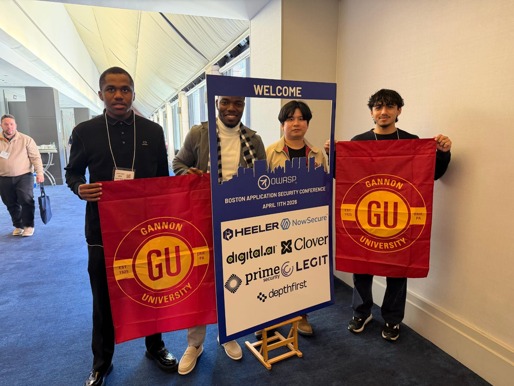
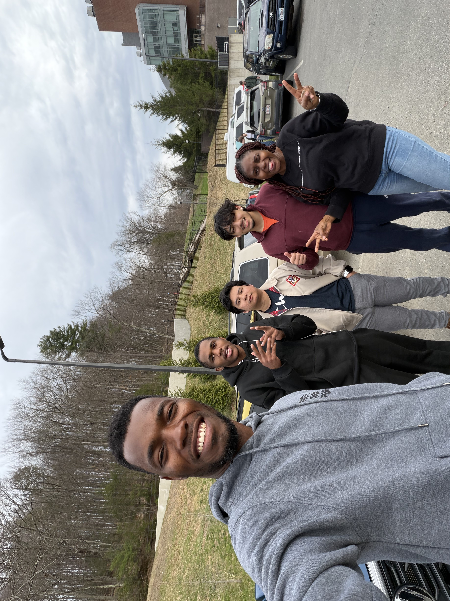

Following our trip to BSidesROC, Gannon Hacks made the trip to Boston for the OWASP Application Security Conference, which organized its content into three tracks: Leadership, Developer, and Research. That spread meant we could split up and cover a lot of ground, from the strategic side of running a security program to the hands-on developer content closer to what we cover in our own workshops.
Conversations With the Field
Some of the most valuable parts of the trip happened outside the session rooms. We got to meet a lot of cybersecurity professionals and companies in the field. I (Abraham Klogo, AB) personally had an in-depth conversation with a Senior Cybersecurity Specialist who works at the Central Bank of Saudi Arabia, and a security engineer who works for the State. We had broad conversations about building resilient cybersecurity systems in readiness for disasters, a topic that doesn't come up as often in a classroom setting but matters enormously in practice.
"Those conversations reminded us that resilience isn't just a technical checklist, it's a mindset you build long before disaster hits." — Abraham Klogo (AB)

Voices From the Trip
A few members of the team shared their take on the experience:
"This conference showed us what it looks like when the ideas we practice every Wednesday scale up to an industry level. It's exactly the kind of exposure we want more of as a club." — Pattarapong Ramungthong (Pong), President, Gannon Hacks Cyber Club
"Being in the room with people actually building these defenses professionally changed how I think about where this field is headed, and where I want to fit into it." — Pal Sudhansu, Vice President, Gannon Hacks Cyber Club
"Getting to sit in on the Developer track and talk shop with people who do this for a living was the highlight of the trip for me." — Daniel, Gannon Hacks Cyber Club
Exploring Boston
Between sessions, we got to experience the buzzing, lively city of Boston and visited both the MIT and Boston University campuses. It was a rich experience for us as students, getting to connect with experts in the field and see firsthand what two of the country's top research institutions look like up close. That, along with the knowledge we picked up in the sessions themselves, is what we walked away with from the OWASP security conference.

An Invitation to Austin
The organizers were genuinely impressed with our determination to travel from Pennsylvania to attend the conference, and told us they'd be glad to see us again at the Austin, Texas edition this October. It's a strong signal that showing up, even when it means a long drive, gets noticed and opens doors.